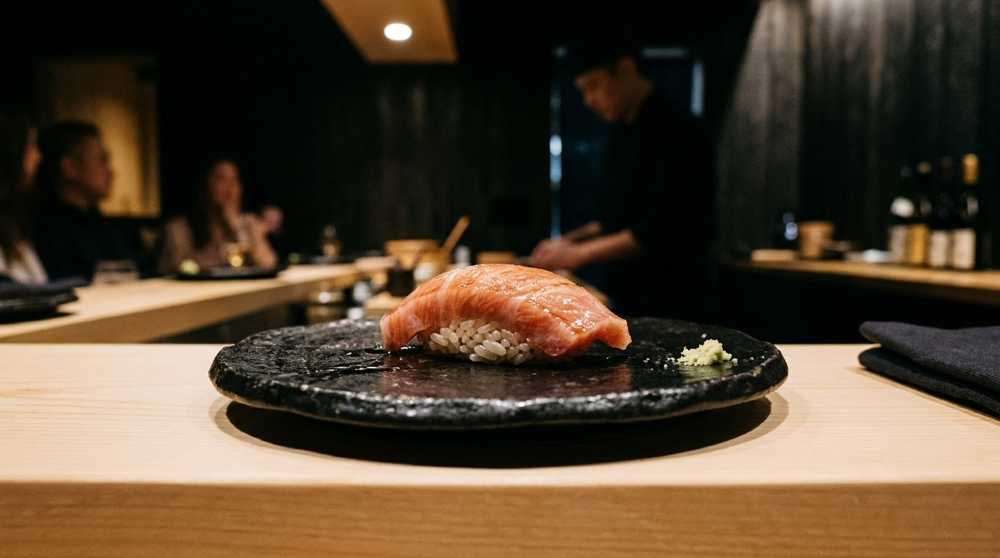
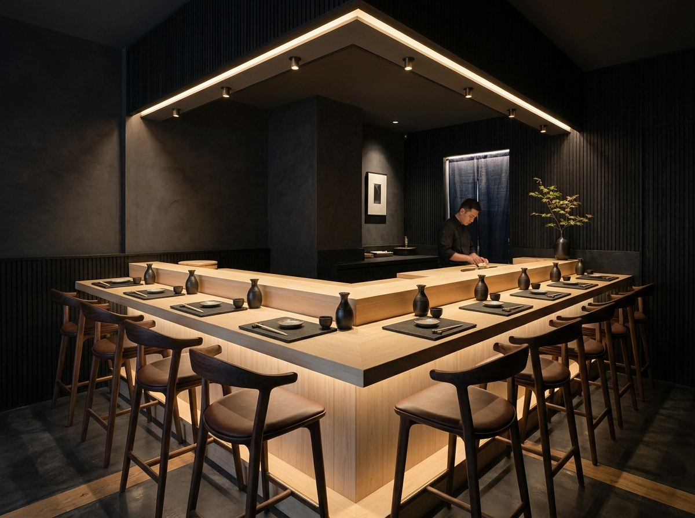
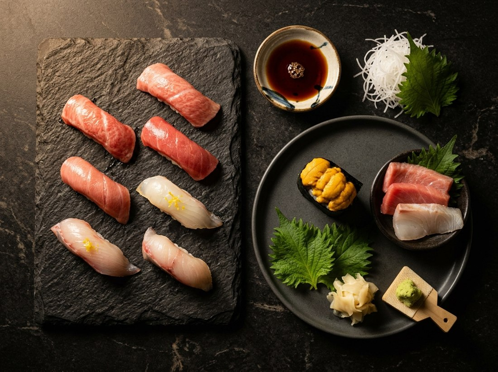
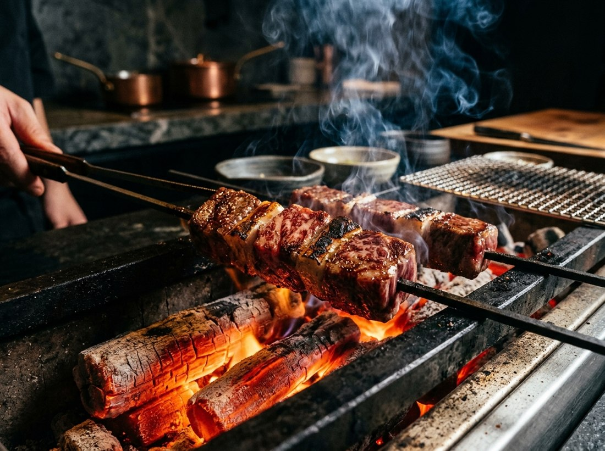

Chawanmushi de erizo gallego
Pase 02Flan salado de dashi de katsuobushi ahumado, yema tibia de erizo de las Rías Baixas y ralladura de yuzu fresco.

Una barra de ciprés hinoki para doce comensales y una brasa viva de carbón blanco binchotan. Pescado salvaje madurado en cámara seca y cocina japonesa de temporada en dos pases cada noche.
KURO nace con una sola obsesión: reducir la distancia entre el fuego y el plato. Trabajamos directamente con lonjas de Burela, Barbate y Palamós, madurando cada pieza entre cuatro y veintiún días para afinar su textura.
El arroz se cuece cada noche con agua blanda y se aliña con vinagre rojo akazu envejecido tres años. No hay carta infinita ni mesas apretadas: solo doce taburetes alrededor del chef y un ritmo pausado de dos horas.
El recorrido Omakase cambia cada semana según marea. En nuestra zona de mesas bajas también servimos robata y sake por copas.
Diseñado en piedra volcánica, cedro yakisugi y ciprés japonés sin barniz. Cada rincón dirige la mirada hacia el gesto del cuchillo y el resplandor de la brasa.



«El buen omakase no intenta sorprenderte con diez ingredientes en el mismo bocado: busca el segundo exacto en el que un solo pescado alcanza su plenitud.»Chef Kenji Takahashi · KURO Madrid
«El mejor equilibrio entre técnica japonesa y producto español que he probado en Madrid. El pase de otoro madurado y el chawanmushi de erizo son inolvidables. La atención en sala es impecable sin resultar rígida.»
«Cenamos en el segundo pase del viernes. Ver trabajar a Kenji a un metro de distancia, con el sonido suave de la brasa binchotan y la selección de sakes que explica Sofía, convierte la cena en un ritual.»
«Fuimos sin alcohol y el maridaje de tés japoneses infusionados en frío nos voló la cabeza. Doce plazas se notan: todo llega a la temperatura perfecta y al ritmo exacto.»
Abrimos reservas el día 1 de cada mes para el mes siguiente. Si tienes alergias o restricciones alimentarias, indícalo al reservar para adaptar el menú con 48 horas de antelación.